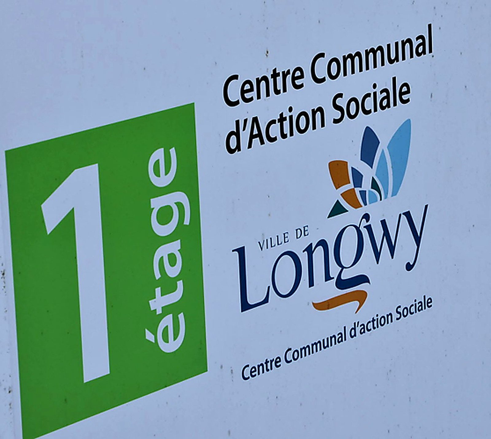
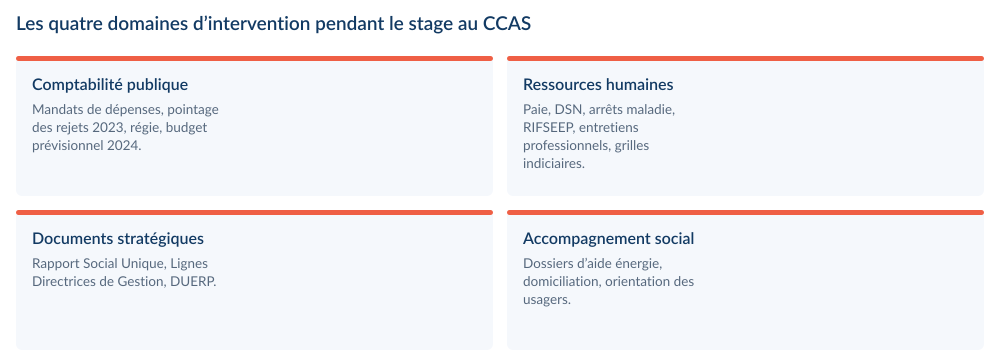

17membres au conseil d’administration
1DSN réalisée
3documents stratégiques rédigés
4années d’absentéisme analysées
Le contexte du stage
- Stage du semestre 2, au Centre Communal d’Action Sociale de Longwy, établissement public administratif communal.
- Une position d’observation privilégiée : comptabilité publique, ressources humaines et action sociale de terrain dans le même service.
- Contexte particulier : la bascule vers l’instruction budgétaire M57, entrée en vigueur le 1er janvier 2024, et une vacance à la présidence du conseil d’administration.
La problématique du rapport
Quels défis organisationnels, opérationnels et financiers le passage d’un centre communal d’action sociale au référentiel budgétaire et comptable M57 implique-t-il ? Et comment garantir une transition efficace et transparente tout en assurant la continuité des services sociaux essentiels pour la communauté locale ?
La structure d’accueil
- Établissement public administratif communal, administré par un conseil d’administration présidé par le maire et composé de 17 membres : le maire, huit membres désignés par le conseil municipal et huit représentants d’acteurs locaux du domaine social — Croix-Rouge, Restos du Cœur, Secours catholique et associations partenaires.
- Ses actions complètent celles de la Caisse d’Allocations Familiales et du Département de Meurthe-et-Moselle : lutte contre l’exclusion, accès aux droits et aux prestations, renforcement du lien social, accompagnement des publics précaires, soutien aux demandes de logement social et instruction des aides sociales facultatives.
- Les dispositifs proposés aux Longoviciens : aides sociales facultatives (alimentaire, eau et énergie, transport et loisirs), domiciliation, logement social, mobilité (PASS 10 voyages TGL, transport accompagné « Bouger + ») et Revenu Minimum Étudiant.

Comptabilité et gestion budgétaire publique
- Émission de factures clients et enregistrement des dépenses sous forme de mandats sur le logiciel comptable de la collectivité, puis transmission à la trésorerie de Longwy pour validation officielle et traitement des retours.
- Pointage exhaustif des rejets survenus sur l’année 2023 : identification des causes, des tendances récurrentes et proposition de mesures correctives.
- Préparation du budget prévisionnel 2024 à partir du budget officiel de l’année précédente : analyse des dépenses et recettes 2023, des abonnements et contrats en cours, intégration des postes non reconduits et des nouvelles charges, calcul du résultat de l’exercice.
- Tenue de la régie : décompte des billets et pièces de l’activité Bouger +, consignation dans un tableur dédié, préparation des sacs de dépôt, dépôt bancaire accompagné et enregistrement anticipé des sommes en recettes.

Ressources humaines et paie
- Mise à jour et gestion des paramètres de paie sur Excel : charges de personnel, cotisations et éléments variables.
- Réalisation, avec le directeur, d’une Déclaration Sociale Nominative (DSN).
- Déclaration de la rémunération brute à l’assurance, enregistrement des arrêts maladie, calcul et transmission de la base de cotisation mensuelle à la mutuelle.
- Analyse des documents RH structurants : fiches de poste, comptes rendus d’entretien professionnel, grilles d’évaluation du Complément Indemnitaire Annuel et arrêtés associés.
- Étude du règlement RIFSEEP et recherche des grilles indiciaires territoriales, restituées sous forme d’un tableau croisant échelon, indice brut, indice majoré, durée, salaire brut et salaire net.
Trois documents stratégiques élaborés
- Les Lignes Directrices de Gestion : tableau des effectifs au 1er janvier 2024 (titulaires et non-titulaires, temps complet et non complet, période 2021-2024), tableau de reclassement des décrets, évolution de la masse salariale 2020-2023 et suivi de l’absentéisme sur quatre ans.
- Le Rapport Social Unique 2023 : évolution des effectifs de 2020 à 2023, répartition par filière, statut et catégorie A/B/C, intégration des articles de loi pertinents, analyse de l’état d’avancement du CCAS au regard de ses objectifs.
- Le Document Unique d’Évaluation des Risques Professionnels, élaboré en quatre étapes : organisation de la prévention, analyse des postes avec les agents, restitution des observations, rédaction du rapport final avec hiérarchisation des risques et mesures d’amélioration — au service d’enjeux humains, sociaux, financiers et juridiques.
Accompagnement des usagers
- Constitution du dossier d’une demande d’aide à la prise en charge des dépenses d’énergie : vérification des critères d’éligibilité à partir de la facture, de l’attestation de paiement des prestations, des avis d’imposition et d’échéance. Suivi intégral du circuit — conseil d’administration, vote et délibération.
- Aide à deux ressortissants ukrainiens pour l’envoi et l’impression de documents administratifs, et accompagnement d’un demandeur d’emploi dans la transmission de sa candidature.
Le passage à l’instruction budgétaire M57
- Évaluation des structures organisationnelles, des processus opérationnels et des flux financiers pour comprendre les implications de la réforme entrée en vigueur le 1er janvier 2024.
- Nouvelles contraintes imposées : présentation détaillée des produits, charges et investissements, gestion minutieuse des flux, calcul de l’autofinancement, ratios de lutte contre la pauvreté, information RH, nouveau logiciel, harmonisation des comptes avec le comptable public et calendrier strict de vote budgétaire.
- Un aléa institutionnel révélateur : la démission du maire, également président du CCAS, a créé une vacance au conseil d’administration. J’ai rédigé le procès-verbal de décharge et de prise en charge des archives ainsi que la note explicative accompagnant la convocation des membres.
Ce que ce stage m’a apporté
- La compréhension de l’intérieur du fonctionnement d’une collectivité : séparation de l’ordonnateur et du comptable public, plafond d’autorisation budgétaire par chapitre, poids des obligations déclaratives.
- La participation à une réunion inter-organismes réunissant 50 à 100 représentants de structures sociales, à la table consacrée au lien social et à la lutte contre la fracture numérique chez les personnes âgées.
- Des compétences en gestion administrative, comptabilité publique, analyse de données RH et travail en équipe, avec la découverte des enjeux sociaux et humains des politiques publiques locales.
Outils et méthodes mobilisés
Logiciel comptable publicDSNExcelRIFSEEPInstruction M57